About me
I am currently working as an Algorithm Engineer at Seed-Application-Vision, ByteDance, focusing on DiT-based video generation and digital human tasks.
I obtained my B.S. degree in Mathematics and Physics from Tsinghua University in 2018, and my Ph.D. degree in the Department of Automation from Tsinghua University in 2023, advised by Yebin Liu in Institute for Brain and Cognitive Sciences.
My research interests lie in DiT-based video generation, digital human, 3D body reconstruction, 3D face reconstruction, 3D face tracking, StyleGAN-based or NeRF or 3DGS-based facial avatar and diffusion-based human generation.

FlowAct-R1: Real-time talking avatar.

Real-time tracking (single RGB camera).

Real-time portrait avatar.
Contact
E-mail: wanglz14@126.com
Wechat: wanglz14
Education
EXPERIENCES
Publications
FlowAct-R1: Real-time talking avatar
Lizhen Wang, Yongming Zhu, Zhipeng Ge, Youwei Zheng, Longhao Zhang, Tianshu Hu, Shiyang Qin, Mingshuang Luo, Jiaxu Zhang, Xin Chen, Yulong Wang, Zerong Zheng, Jianwen Jiang, Chao Liang, Weifeng Chen, Xing Wang, Yuan Zhang, Mingyuan Gao
arXiv preprint, 2026
DreamActor-H1: High-Fidelity Human-Product Demonstration Video Generation via Motion-designed Diffusion Transformers
Lizhen Wang, Zhurong Xia, Tianshu Hu, Pengrui Wang, Pengfei Wei, Zerong Zheng, Ming Zhou, Yuan Zhang, Mingyuan Gao
arXiv preprint, 2025
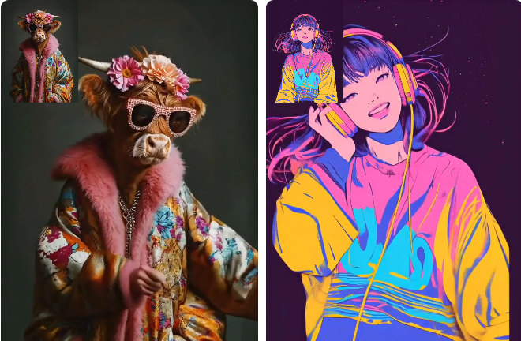
DreamActor-M1: Holistic, Expressive and Robust Human Image Animation with Hybrid Guidance
Yuxuan Luo*, Zhengkun Rong*, Lizhen Wang*, Longhao Zhang*, Tianshu Hu*, Yongming Zhu
In ICCV 2025
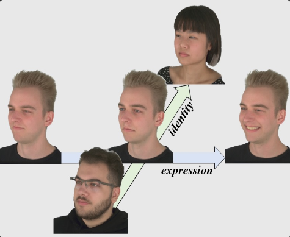
3D Gaussian Parametric Head Model
Yuelang Xu, Lizhen Wang, Zerong Zheng, Zhaoqi Su, Yebin Liu
In ECCV 2024
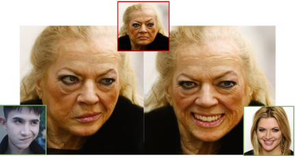
InvertAvatar: Incremental GAN Inversion for Generalized Head Avatars
Xiaochen Zhao*, Jingxiang Sun*, Lizhen Wang, Jinli Suo, and Yebin Liu
In SIGGRAPH 2024
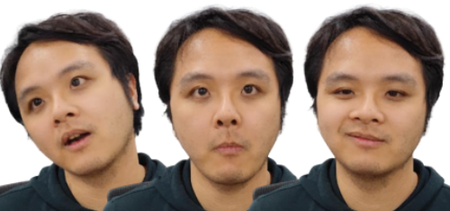
MonoGaussianAvatar: Monocular Gaussian Point-based Head Avatar
Yufan Chen, Lizhen Wang, Qijing Li, Hongjiang Xiao, Shengping Zhang, Hongxun Yao, Yebin Liu
In SIGGRAPH 2024
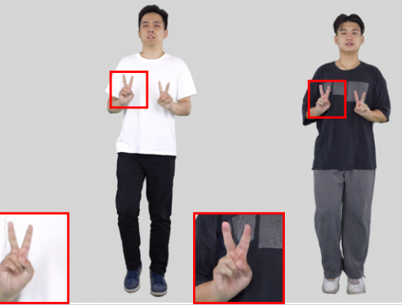
Animatable Gaussians: Learning Pose-dependent Gaussian Maps for High-fidelity Human Avatar Modeling
Zhe Li, Zerong Zheng, Lizhen Wang, Yebin Liu
In CVPR 2024
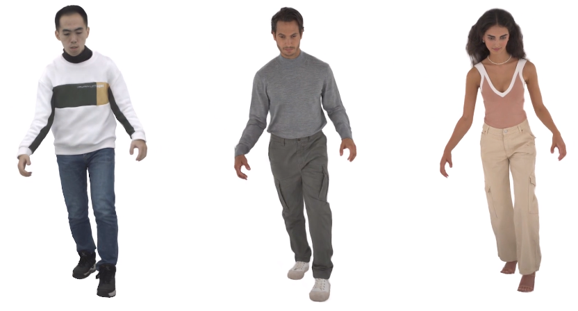
RAM-Avatar: Real-time Photo-Realistic Avatar from Monocular Videos with Full-body Control
Xiang Deng, Zerong Zheng, Yuxiang Zhang, Jingxiang Sun, Chao Xu, XiaoDong Yang, Lizhen Wang, Yebin Liu
In CVPR 2024
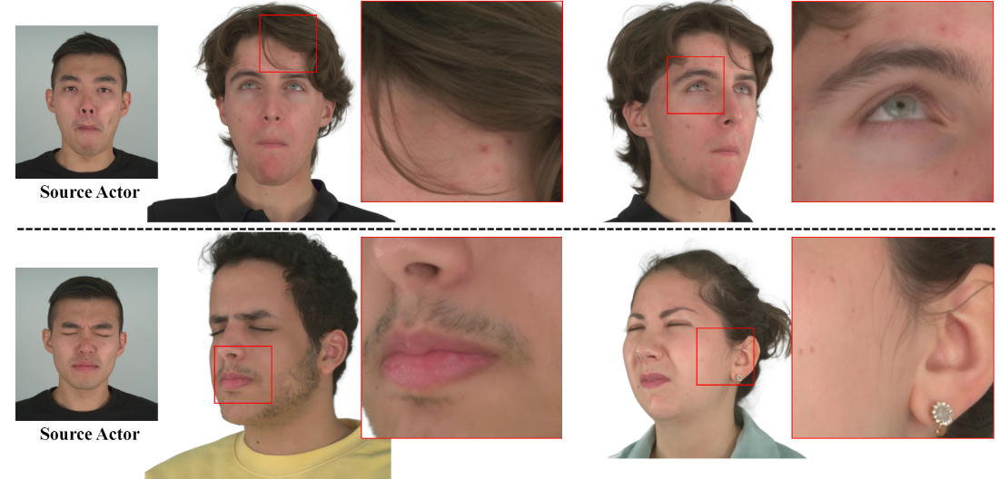
Gaussian Head Avatar: Ultra High-fidelity Head Avatar via Dynamic Gaussians
Yuelang Xu, Benwang Chen, Zhe Li, Hongwen Zhang, Lizhen Wang, Zerong Zheng, Yebin Liu
In CVPR 2024
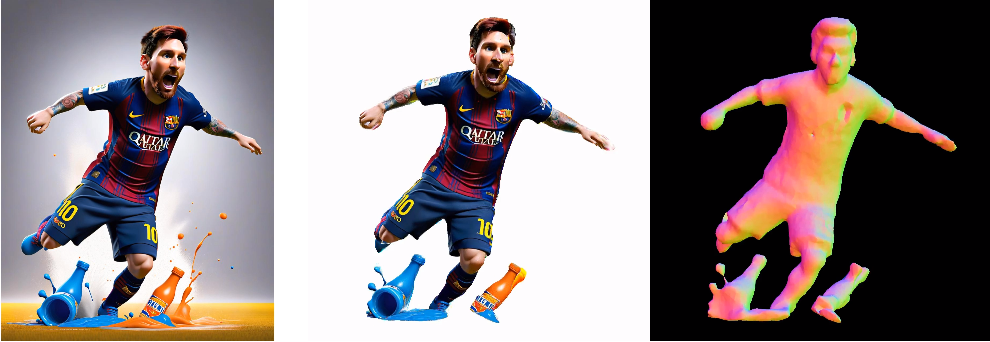
DreamCraft3D: Hierarchical 3D Generation with Bootstrapped Diffusion Prior
Jingxiang Sun, Bo Zhang, Ruizhi Shao, Lizhen Wang, Wen Liu, Zhenda Xie, Yebin Liu
In ICLR 2024
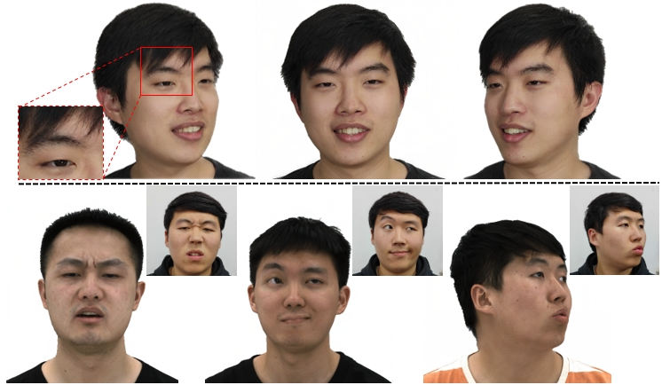
HAvatar: High-fidelity Head Avatar via Facial Model Conditioned Neural Radiance Field
Xiaochen Zhao, Lizhen Wang, Jingxiang Sun, Ruizhi Shao, Jinli Suo, Yebin Liu
In ACM Transaction on Graphics (ToG), 2023
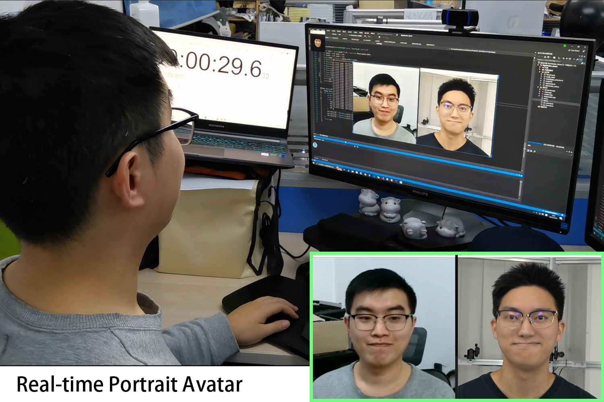
StyleAvatar: Real-time Photo-realistic Portrait Avatar from a Single Video
Lizhen Wang, Xiaochen Zhao, Jingxiang Sun, Yuxiang Zhang, Hongwen Zhang, Tao Yu, Yebin Liu
In SIGGRAPH 2023
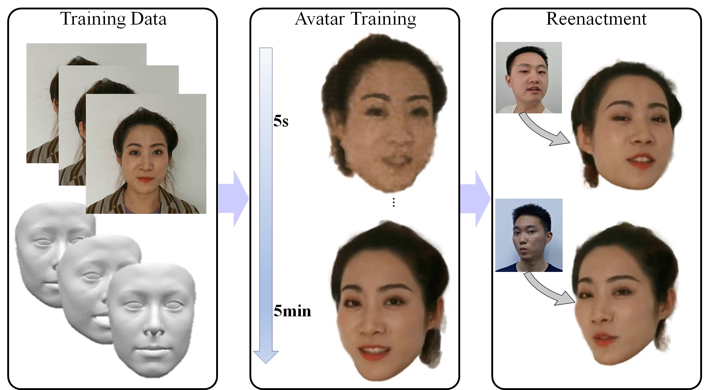
AvatarMAV: Fast 3D Head Avatar Reconstruction Using Motion-Aware Neural Voxels
Yuelang Xu, Lizhen Wang, Xiaochen Zhao, Hongwen Zhang, Yebin Liu
In SIGGRAPH 2023
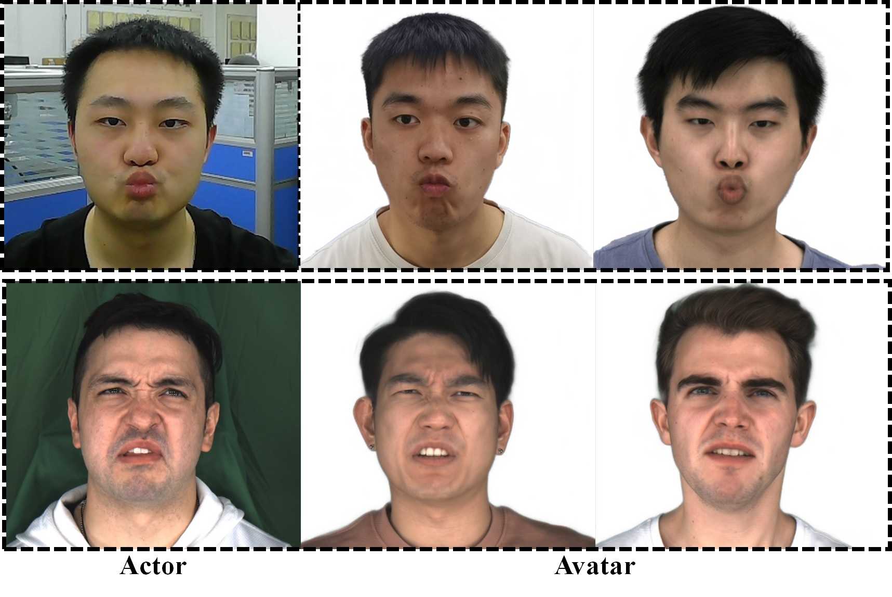
LatentAvatar: Learning Latent Expression Code for Expressive Neural Head Avatar
Yuelang Xu, Hongwen Zhang, Lizhen Wang, Xiaochen Zhao, Han Huang, Guojun Qi, Yebin Liu
In SIGGRAPH 2023
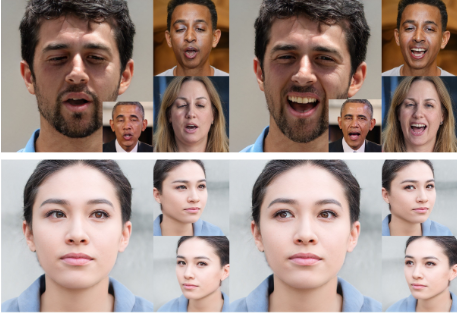
Next3D: Generative Neural Texture Rasterization for 3D-Aware Head Avatars
Jingxiang Sun, Xuan Wang, Lizhen Wang, Xiaoyu Li, Yong Zhang, Hongwen Zhang, Yebin Liu
In CVPR 2023 (highlight)
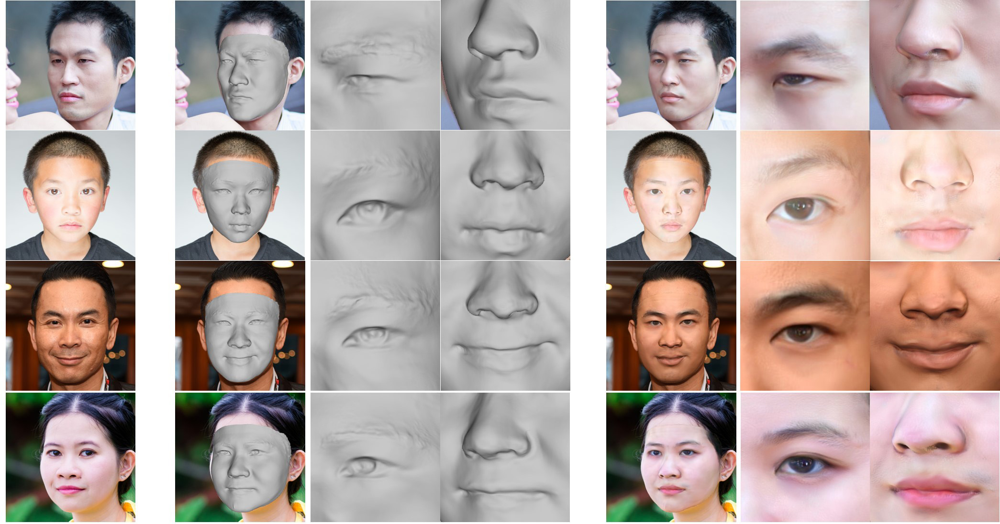
FaceVerse: a Fine-grained and Detail-controllable 3D Face Morphable Model from a Hybrid Dataset
Lizhen Wang, Zhiyuan Chen, Tao Yu, Chenguang Ma, Liang Li, Yebin Liu
In CVPR 2022
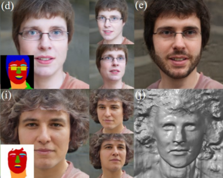
IDE-3D: Interactive Disentangled Editing for High-Resolution 3D-aware Portrait Synthesis
Jingxiang Sun, Xuan Wang, Yichun Shi, Lizhen Wang, Jue Wang, Yebin Liu
In ACM Transactions on Graphics (SIGGRAPH Asia 2022)
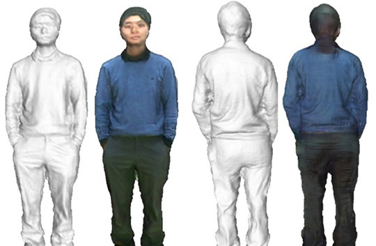
NormalGAN: Learning Detailed 3D Human from a Single RGB-D Image
Lizhen Wang, Xiaochen Zhao, Tao Yu, Yebin Liu
In ECCV 2020
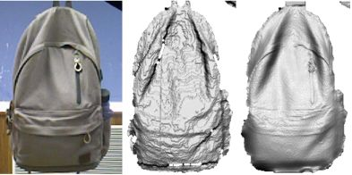
DDRNet: Depth Map Denoising and Refinement for Consumer Depth Cameras Using Cascaded CNNs
Shi Yan, Chenglei Wu, Lizhen Wang, Feng Xu, Liang An, Kaiwen Guo, Yebin Liu
In ECCV 2018
Teaching
- TA, Data Structure (Since Autumn 2018)